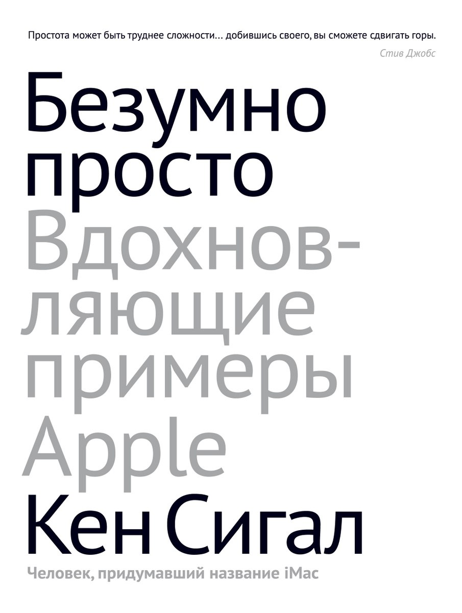

— Chiat/Day также работало и с Intel, но реклама Apple вызывала эмоциональный отклик, а реклама Intel нет. Apple ориентировалась на свое дизайн-мышление, а Intel на цифры и исследования.
К тому же, у Intel в тестировании и принятии решений участвовало много людей, и они старались срезать острые углы в угоду всем целевым группам. Apple же работала маленькими умными командами (два человека от Apple и два человека от Chiat/Day). Как ни старалось Chiat/Day сделать что-то сильное, как у Apple, у них не было шанса из-за большого количества людей, которые принимали участие в решениях, а также из-за отсутствия развитого дизайн-мышления внутри Intel.
— Apple около тридцати лет работала с одним рекламным агентством, а многие бренды ежегодно устраивают тендеры и регулярно меняют подрядчиков. Chiat/Day глубоко участвовало в процессах Apple и сильно влияло на них. Например, Джобс хотел назвать свой настольный компьютер MacMan, но автор книги предложил название iMac и упорно переубеждал Джобса, пока тот не согласился.
Так как они хорошо понимали друг друга и философию бренда, вместе они смогли придумать много классный идей, например, концепцию Think Different, которая помогла спасти Apple от банкротства.
Если часто менять агентство, то не установится тесной связи, не будет глубокого взаимопонимания. Долгосрочное сотрудничество дает плоды.
Сергей Прусс
